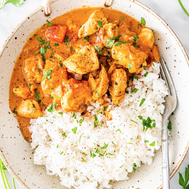

Chicken Curry

Ingredients
- 6 lbs Chicken
- 1 Cup Water
- 1 Bay Leaf
- 1 Large Onion
- 1 Cup Sugar
- 1 Clove Garlic, chopped
- 1 Pint Water
- 2 Chicken Bouillon cube
- ½ tsp. Curry Powder
- 2 tbsp Sherry Wine
- Salt/pepper
Instructions
- Bake Chicken with listed ingredients in a 350 degree oven for 1 ½ hours or until tender.
- Remove chicken and bone. To stock in roaster add the following: water, bouillon, curry powder, sherry.
Cook until liquid bubbles. Thicken with 4 Tbsp. flour.
- Strain gravy into large saucepan. Add 1 can button mushrooms and juice and 1 can undiluted mushroom soup which
has been beaten smooth. Blend over medium heat. Add chicken meat and heat.
- Just before serving, stir ½ cup commercial sour cream into chicken mixture. Serve in chafing dish with chived rice as side dish.